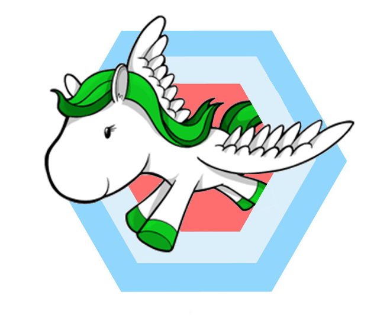

Hexagonal Django
@proofit404
Поговорим о коде
Плохой код
Хрупкость
Проект ломается в местах, несвязанных с вносимыми изменениямиЖесткость
Код сопротивляется модификации, необходимостью вносить большое количество правок в различные части проекта даже для тривиальных задачПлохой код больно бьет про продакшену :(
Кому-то было лень писать custom manager
def make_report(request, pk):
request.GET = request.GET.copy()
request.GET['foo'] = 'bar'
response = another_report(request, pk)
return render(request, 'report.html',
context=response.context_data)
А ещё положил логику в шаблоны, чё ей там будет...
{% for i, j, k in rows %}
<tr>
<td>{{ i }}</td>
<td>{{ j }}</td>
<td>{{ i|add:j }}</td>
</tr>
{% endfor %}
И все вроде бы работает
| Customer | Orders number | In total |
| Jane | 2 | 120$ |
| Ted | 7 | 3053$ |
До первого изменения в another_report
| Customer | Orders number | In total |
| Jane | 2 | -2453261524615246.0$ |
| Ted | 7 | -7502737247324375.0$ |
Не все так просто
Каждое конкретное решение в зависимости от контекста может быть и паттерном и антипаттерном
Код плохой, если при работе над ним чувствуешь себя вот так
Код хороший, если каждый тикет выглядит вот так


Django models, encapsulation and data integrity
As codebases grow it becomes difficult to make any cast-iron guarantees that you really are enforcing application-level data integrity.
Архитектурные стили
Pipeline architecture

Layered architecture
MVC фреймворки хорошо подходят для CRUD приложений
class PublisherList(ListView):
model = Publisher
context_object_name = 'publishers'
class PublisherDetail(DetailView):
queryset = Publisher.objects.all()
context_object_name = 'publisher'
Причём тут Django?
Как начать в уже существующем проекте?
Reusable apps ➙ Reusable hexagons
app/
templates/
templatetags/
tests/
Pros:
- Сохраняется связь с доменной областью
- Изоляция зависимостей
- Очень быстрые тесты
Cons:
- Сложнее чем MVC для понимания
- Придется подумать, как использовать существующие инструменты